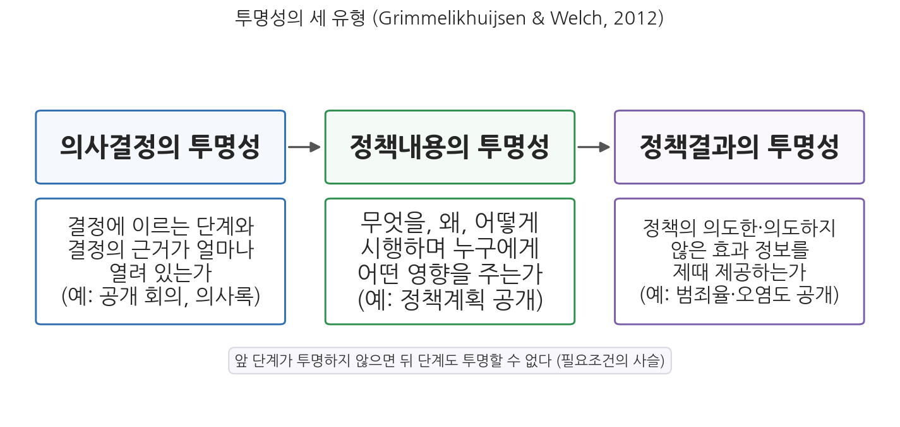
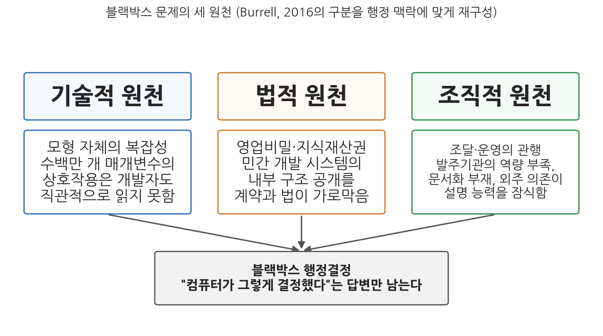

3주차 1차시. AI와 투명성 (1): 알고리즘 불투명성
햇빛은 최고의 살균제라고 하며, 전등불은 가장 유능한 경찰관이라고 한다. (루이스 브랜다이스, 『타인의 돈』, 1914)
이 장에서 배우는 것
2021년 1월 15일, 네덜란드의 뤼터(Mark Rutte) 내각이 총사퇴했다. 전쟁도 경제 위기도 아닌, 행정 시스템 하나가 정권을 무너뜨렸다. 세무당국이 아동보육수당 부정수급을 걸러내겠다며 운용한 위험 분류 시스템이 수만 명의 부모를 부정수급자로 잘못 지목했고, 이들은 수천만 원에 이르는 수당을 일시에 반환하라는 요구를 받아 파산과 이혼, 가정 해체로 내몰렸다. 의회 조사위원회는 2020년 12월 이 사건을 "전례 없는 불의(Ongekend onrecht)"라는 제목의 보고서로 정리했다. 피해자들이 수년간 겪은 고통의 핵심에는 한 가지 공통된 경험이 있었다. 왜 자신이 부정수급자로 분류되었는지 아무도 설명해 주지 않았다는 것이다. 이중국적 여부가 위험 지표로 쓰였다는 사실은 한참 뒤에야 드러났다.
2주차에서 우리는 AI(인공지능)가 행정의 효율성을 어떻게 높이는지, 그리고 그 약속이 어디서 흔들리는지를 보았다. 이번 주는 두 번째 공공가치인 투명성을 다룬다. 효율의 이름으로 도입된 알고리즘이 행정 결정의 근거를 안개 속에 감출 때 무슨 일이 벌어지는가. 이 장(1차시)은 문제를 진단한다. 투명성이라는 행정가치의 학술적 체계를 정리하고, AI가 만드는 새로운 종류의 불투명성을 해부하며, 그 행정적 결과를 실제 사례로 확인한다. 다음 장(2차시)은 처방을 다룬다. 구체적으로 다음을 배운다.
- 행정가치로서 투명성의 개념과 세 유형: 의사결정, 정책내용, 정책결과의 투명성
- 투명성의 이론적 기초와 효용, 그리고 투명성이 언제나 좋지만은 않은 이유
- AI가 만드는 불투명성이 기존의 행정 비밀주의와 어떻게 다른가
- 블랙박스 문제의 세 원천: 기술적, 법적, 조직적 원천
- 불투명한 알고리즘 행정이 낳은 실제 결과: COMPAS, SyRI, Ofqual 사례
이 장은 하나의 질문을 따라 전개된다. "시민이 '왜'라고 물었을 때 정부가 답하지 못하는 행정은 무엇을 잃는가?"
1.1 행정가치로서 투명성의 개념과 세 유형을 정리한다 → 1.2 투명성의 효용과 한계를 균형 있게 따진다 → 1.3 AI가 만드는 새로운 불투명성의 성격을 규명한다 → 1.4 블랙박스 문제의 세 원천(기술적·법적·조직적)을 해부한다 → 1.5 불투명성이 낳은 행정적 결과를 세 나라의 사례로 확인한다.
1.1 행정가치로서 투명성
투명성이란 무엇인가
행정의 투명성(transparency)은 정부의 운영과 의사결정 과정, 그리고 관련 정보에 대한 국민의 접근성과 개방성을 의미한다(Hood, 2006). 유리창에 비유하면 이해가 쉽다. 투명한 정부란 시민이 창밖에서 안을 들여다볼 수 있는 정부, 곧 정부가 무엇을 왜 하는지를 시민이 확인할 수 있는 정부다. 투명성은 좋은 거버넌스(good governance)의 기본 원칙으로 꼽히며, 민주적 정당성을 확보하고 부패를 방지하며 정부와 제도에 대한 국민의 신뢰를 강화하는 메커니즘으로 기능한다(Birkinshaw, 2006; Roberts, 2006). 또한 투명성은 그 자체로 목적일 뿐 아니라 반응성, 형평성, 효율성 같은 다른 공공가치의 실현에 기여하는 도구적 가치이기도 하다(Bozeman, 2007).
투명성(transparency)은 정부 운영, 의사결정 과정과 정보에 대한 국민의 접근성, 개방성을 뜻한다(Hood, 2006). 핵심은 두 요소다. 하나는 정보의 공개(정부가 무엇을 하는지에 관한 정보를 내놓는 것)이고, 다른 하나는 정보의 이해가능성(공개된 정보를 시민이 실제로 이해하고 활용할 수 있는 것)이다. 뒤에서 보겠지만 AI 시대의 투명성 논쟁에서는 두 번째 요소가 특히 중요해진다.
왜 투명성이 민주적 거버넌스에 필수적인가. 이론적으로는 주인-대리인(principal-agent) 관계로 설명할 수 있다. 민주주의에서 주인은 시민이고 정부 관료는 시민을 대신해 일하는 대리인이다. 문제는 대리인이 주인보다 훨씬 많은 정보를 가진다는 데 있다. 이 정보 비대칭이 클수록 대리인은 주인의 이익이 아니라 자신의 이익을 좇을 여지가 커진다. 투명성은 이 비대칭을 줄여 권력 남용을 막는 장치다(Janssen & van den Berg, 2011). 시민이 정부의 행동을 관찰할 수 있어야 시민 참여와 정보에 입각한 의사결정(informed decision-making)이 가능해지고, 책임을 물을 수 있게 된다(Meijer, 2013). 나아가 투명성은 정부 성과를 개선하고 신뢰를 증진하며 서비스 제공의 공정성을 보장함으로써 공익 창출에 기여한다(Moore, 1995).
무엇의 투명성인가: 세 유형
그런데 "정부가 투명하다"고 할 때, 정확히 무엇이 투명하다는 것인가. 그리멜리크하위전과 웰치(Grimmelikhuijsen & Welch, 2012)는 투명성의 대상을 기준으로 세 유형을 구분한다. 의사결정의 투명성, 정책내용의 투명성, 정책결과의 투명성이다.

그림 3-1을 읽는 법은 이렇다. 세 상자는 정책이 만들어져 효과를 내기까지의 시간 순서를 따르며, 상자를 잇는 화살표는 앞 단계의 투명성이 뒤 단계 투명성의 필요조건임을 뜻한다. 이 그림에서 알 수 있는 것은 투명성이 하나의 덩어리가 아니라 단계별로 확보해야 할 사슬이라는 점이다. 각 유형을 차례로 보자.
첫째, 의사결정의 투명성은 결정에 도달하기 위해 취한 단계와 결정의 근거가 얼마나 열려 있는가를 뜻한다. 시민은 자신에게 영향을 미치는 결정에 관한 정보를 얻고, 그 결정이 허용 가능한 규범이나 선거 공약에 부합하는지 확인할 수 있어야 한다. 이 점에서 의사결정 투명성은 전통적으로 민주성과 책임성의 기초로 여겨져 왔다. 공개 회의와 의사록이 대표적 형태로, 결정 과정이 어떻게 진행되었는지를 보여 주는 데 초점이 있다. 국회 회의록, 지방의회 방청 제도, 정부 위원회의 회의록 공개가 여기에 해당한다.
둘째, 정책내용의 투명성은 정부가 정책 자체에 관해 공개하는 정보의 수준이다. 어떤 조치를 채택했고, 그것이 어떻게 문제를 해결할 것이며, 어떻게 시행되고, 시민과 이해관계 집단에 어떤 영향을 미칠 것인지에 관한 포괄적 정보가 그 내용이다. 많은 정부 기관이 오염이나 범죄 같은 문제에 대처하기 위한 정책 계획을 웹사이트에 게시하는 것이 그 예다. 실제 정책은 의사결정 과정의 산물이므로, 정책내용의 투명성은 의사결정의 투명성에서 비롯되는 것으로 볼 수 있다(Grimmelikhuijsen et al., 2013).
셋째, 정책결과의 투명성은 정책의 효과에 관한 정보를 제공하는가, 그리고 그 정보가 적시에 제공되는가를 뜻한다. 도시의 범죄율을 공표하거나 환경 오염 데이터를 공개하는 것이 그 예다. 결과 중심의 관리를 강조한 신공공관리(New Public Management, NPM) 개혁 이후 정책결과의 투명성은 더욱 중요해졌다(Pollitt & Bouckaert, 2004). 정책 결과는 수행된 정책 수단의 의도한 효과와 의도하지 않은 효과로 판단되므로, 정책결과의 투명성은 정책내용의 투명성을 전제한다.
세 유형의 관계에 주목하자. 의사결정이 투명하지 못하면 정책내용이 투명하지 못하게 되고, 나아가 정책결과도 투명하지 못하게 된다. 필요조건의 사슬이다. 이 사슬 구조는 이 장의 주제인 알고리즘 불투명성이 왜 심각한 문제인지를 예고한다. AI가 침식하는 것은 사슬의 첫 고리, 곧 의사결정의 투명성이기 때문이다. 결정이 어떻게 내려졌는지 알 수 없으면 그 뒤의 모든 투명성이 함께 흔들린다.
1.2 투명성은 언제나 좋은가
투명성의 효용
투명성의 효용은 세 갈래로 정리할 수 있다. 첫째, 신뢰의 구축이다. 개방적 관행은 제도에 대한 신뢰를 쌓아 부패와 비효율에 대한 회의론을 줄인다(Grimmelikhuijsen et al., 2013). 둘째, 감시와 통제다. 투명성은 시민, 언론, 시민사회의 감독을 가능하게 하여 관료가 공익을 위해 행동하도록 견인하고(Heald, 2006), 의사결정의 중복, 관리 부실, 부패를 개선하는 효과를 낸다(Bovens, 2007). 셋째, 참여의 확대다. 정보에 대한 접근 가능성은 시민 참여를 증진하고 거버넌스의 민주성과 포용성을 높인다(Birkinshaw, 2006; Meijer, 2012). 요컨대 투명성은 신뢰, 통제, 참여라는 민주적 행정의 세 기둥을 떠받친다.
투명성의 한계와 역설
그러나 투명성을 만능열쇠로 여기는 것은 순진한 생각이다. 행정학 연구는 투명성이 기대와 어긋나게 작동하는 경우들을 꾸준히 보고해 왔다.
우선 투명성이 오히려 참여와 숙의를 위축시킬 수 있다. 회의록을 한 글자도 빠짐없이 공개한다면 회의 참석자들이 더 솔직하게 발언할까. 오히려 기록될 것을 의식해 공식적이고 방어적인 발언만 남기고, 실질적 토론은 기록되지 않는 자리로 옮겨 갈 수 있다(Meijer et al., 2012). 또한 정보가 많다고 감독이 잘되는 것도 아니다. 지나치게 많은 정보는 오히려 감독의 어려움을 가중할 수 있다(Brandsma, 2012). 명확하지 않은 정보가 과도하게 공개되면 시민이 정보를 효과적으로 처리하고 활용하기 어려워지는 이른바 투명성 과부하(overload of transparency)가 발생한다(Hood & Heald, 2006). 나아가 투명성 요구가 지나치면 목표대체 현상, 곧 투명해 보이는 것 자체가 목표가 되는 왜곡이 생길 수 있고, 정부의 양극화와 형식주의 강화로 이어질 수 있다는 지적도 있다(Grumet, 2014).
"많이 공개할수록 좋다"는 등식은 성립하지 않는다. 수천 쪽의 회의 자료를 통째로 공개하는 것은 형식적으로는 투명하지만 실질적으로는 불투명할 수 있다. 시민이 처리할 수 없는 정보의 홍수는 오히려 핵심을 감추는 연막이 되기 때문이다. 그래서 투명성은 개인정보 보호, 안보상의 요구와 균형을 이루어야 하고, 피상적이지 않은 실질적 정보를 제공해야 한다(Fung et al., 2007; Meijer & Grimmelikhuijsen, 2020). 이 통찰은 2차시에서 볼 "AI 모형의 기술 문서를 공개하면 투명성이 확보되는가"라는 질문의 복선이다.
공급자 쪽의 사정도 있다. 공무원은 감사 부담, 업무 부담, 정치적 압력에 대한 우려로 투명성 이니셔티브에 저항하기도 한다(Cucciniello et al., 2017). 투명성은 공짜가 아니며, 정보를 생산·정리·공개하는 데는 행정 비용이 들고 공개된 정보는 정치적 공격의 소재가 되기도 한다. 요컨대 투명성은 원칙적으로 옹호하되 그 설계는 정교해야 하는 가치다. 이 균형 감각을 갖고 이제 본론으로 들어가자. AI는 이 투명성이라는 가치에 무엇을 더하고 무엇을 빼앗는가.
1.3 AI가 만드는 새로운 불투명성
AI는 투명성의 친구이기도 하다
먼저 공정하게 짚어 둘 것이 있다. AI는 투명성을 해치기만 하는 기술이 아니다. 오히려 정보 접근성을 높여 정부의 개방성을 강화하는 도구가 될 수 있다. 방대한 행정문서를 자연어 처리(natural language processing, NLP) 기술로 분석해 그 결과를 시민에게 제공할 수 있고, 챗봇은 복잡한 법률과 제도를 시민이 쉽게 검색하도록 돕는다. 시민에게 정부는 오랫동안 "무엇을 어디서 찾아야 할지 모르는" 거대한 문서고였는데, AI는 그 문서고에 검색창과 안내원을 달아 준 셈이다. 정보의 공개만이 아니라 정보의 이해가능성까지 높인다는 점에서, 이는 앞서 본 투명성의 두 요소 모두에 기여한다.
문제는 정반대 방향에서 생긴다. AI가 정보 접근의 도구를 넘어 행정 결정의 주체 또는 근거가 될 때다.
"컴퓨터가 그렇게 결정했다"
한 시민이 영업 허가를 신청했다가 거부당했다고 하자. 시민이 이유를 묻자 담당 공무원이 이렇게 답한다. "컴퓨터가 그렇게 결정했습니다." 이 답변이 왜 문제인가. 전통 행정에서 결정의 근거는 원리상 추적 가능했다. 법령이 있고, 지침이 있고, 결재 문서가 있고, 서명한 담당자가 있다. 시민이 이의를 제기하면 행정청은 어떤 규정을 어떤 사실관계에 적용해 그 결론에 이르렀는지 제시해야 하며, 대개 제시할 수 있다. 그런데 복잡한 AI 알고리즘이 개입하면 이 사슬이 끊어진다. 공무원조차 알고리즘의 판단을 쉽게 해석할 수 없는 경우가 많아, 시민에게 불투명한 의사결정이 이루어질 가능성이 커진다. 모형의 성능이 좋지 않거나 알고리즘에 잠재적 편향이 존재한다면 정부는 시민의 신뢰를 잃게 되므로, 공공기관들은 AI 시스템의 블랙박스(black box)를 해체하라는 압박을 받고 있다.
블랙박스(black box)는 입력과 출력은 관찰할 수 있지만 내부의 작동 과정은 들여다볼 수 없는 시스템을 가리키는 말이다. 파스콸레(Pasquale, 2015)는 금융과 정보 산업의 비밀스러운 알고리즘이 개인의 삶을 좌우하는 사회를 "블랙박스 사회"라고 불렀다. 알고리즘 불투명성(algorithmic opacity)은 알고리즘에 기반한 결정에서 "왜 이 입력이 이 출력으로 이어졌는가"를 이해당사자가 알 수 없는 상태를 뜻하며, 버렐(Burrell, 2016)은 그 원인이 하나가 아니라 여러 겹임을 보였다. 다음 절의 주제다.
무엇이 새로운가: 규칙에서 패턴으로
여기서 한 가지 반론이 가능하다. "행정이 불투명한 것이 어제오늘 일인가. 밀실 결정과 관료제의 비밀주의는 베버 이래의 고전적 주제 아닌가." 옳은 지적이다. 관료제는 원래 비밀을 좋아한다. 그러나 AI의 불투명성에는 질적으로 새로운 데가 있다.
전통적인 행정 전산화, 이를테면 소득이 기준선 이하이면 수당을 지급하는 프로그램은 사람이 만든 규칙을 컴퓨터가 그대로 실행하는 것이다. 규칙이 문서로 존재하므로, 감추어져 있더라도 공개를 강제하면 읽을 수 있다. 불투명성이 있다면 그것은 의지의 문제다. 반면 기계학습(machine learning) 기반 AI는 사람이 규칙을 써 주는 것이 아니라 기계가 대량의 과거 데이터에서 스스로 패턴을 찾아낸다. 1주차에서 본 것처럼, 개와 고양이를 구분하는 규칙을 사람이 쓰는 대신 수십만 장의 사진을 보여 주고 기계가 구분 기준을 스스로 만들게 하는 방식이다. 그 결과물은 사람이 읽을 수 있는 규칙의 목록이 아니라 수백만 개의 숫자(매개변수)의 배열이다. 이 숫자들을 모두 공개해도, 심지어 그것을 만든 개발자가 들여다보아도, "그래서 왜 이 신청자가 고위험으로 분류되었는가"라는 질문에는 바로 답할 수 없다. 공개해도 읽을 수 없는 불투명성, 의지가 아니라 기술 그 자체에서 나오는 불투명성이 등장한 것이다.
이것이 투명성의 사슬(그림 3-1)에 갖는 함의는 분명하다. 알고리즘이 행정 결정에 개입하는 순간, 사슬의 첫 고리인 의사결정의 투명성에 지금까지 없던 종류의 구멍이 뚫린다. 그리고 그 구멍은 정책내용과 정책결과의 투명성으로 번져 간다.
1.4 블랙박스 문제의 세 원천
알고리즘 불투명성은 단일한 현상이 아니다. 버렐(Burrell, 2016)은 불투명성이 서로 다른 세 겹, 곧 의도적 비밀주의, 기술적 문해력의 부족, 기계학습 자체의 특성에서 나온다고 구분한 바 있다. 이 구분을 행정의 맥락에 맞게 재구성하면 블랙박스 문제의 원천을 기술적, 법적, 조직적 원천의 셋으로 정리할 수 있다.

그림 3-2를 읽는 법은 이렇다. 위의 세 상자는 각각 불투명성을 만들어 내는 독립적 원천이고, 세 화살표가 한 지점으로 모이듯 현실의 블랙박스 행정결정은 대개 세 원천이 겹쳐서 만들어진다. 이 그림에서 알 수 있는 것은 처방도 하나일 수 없다는 점이다. 원천이 다르면 해법도 달라야 한다.
기술적 원천: 모형 자체의 복잡성
첫째 원천은 기술에 내재한다. 앞 절에서 본 것처럼 기계학습 모형, 특히 심층신경망(deep neural network)은 수많은 매개변수의 상호작용으로 판단을 내리며, 그 과정은 개발자에게도 직관적으로 읽히지 않는다. 이것은 누가 감추어서 생기는 문제가 아니라 예측 성능을 얻는 대가로 치르는 비용에 가깝다. 일반적으로 단순하고 해석하기 쉬운 모형(선형회귀, 의사결정 규칙의 목록)은 성능에 한계가 있고, 성능이 뛰어난 복잡한 모형은 해석이 어렵다. 이 성능과 해석가능성의 상충은 2차시에서 설명가능 AI를 다룰 때 다시 자세히 본다.
법적 원천: 영업비밀과 지식재산권
둘째 원천은 법과 계약에서 나온다. 공공부문이 쓰는 AI 시스템의 상당수는 민간 기업이 개발해 정부에 납품한 것이다. 기업은 알고리즘을 영업비밀(trade secret)로 보호하려 하며, 그 결과 시스템을 운용하는 정부조차 내부 구조를 알지 못하거나, 알더라도 공개할 수 없는 상황이 생긴다. 기술적으로는 설명 가능한 시스템조차 법적 장벽 때문에 불투명해지는 것이다. 대표적 사례가 미국의 재범위험 평가 도구 COMPAS다.
COMPAS는 민간 기업 노스포인트(Northpointe, 현 Equivant)가 개발한 재범위험 평가 도구로, 미국 여러 주의 법원이 보석·양형 판단의 참고자료로 사용해 왔다. 2016년 비영리 탐사보도기관 프로퍼블리카(ProPublica)는 플로리다주의 실제 데이터를 분석해, COMPAS가 흑인 피고인의 재범 위험은 과대평가하고 백인 피고인의 위험은 과소평가하는 경향이 있다고 보도했다(Angwin et al., 2016). 개발사는 자사 기준으로는 인종 간 차이가 없다고 반박했지만, 알고리즘의 세부 구조는 영업비밀이라는 이유로 공개하지 않아 언론과 연구자들의 검증 요구는 번번이 거부되었다. 같은 해 위스콘신주에서는 피고인 루미스(Eric Loomis)가 "비공개 알고리즘의 점수를 양형에 쓰는 것은 적법절차 위반"이라며 소송을 제기했으나, 위스콘신주 대법원은 판사가 점수의 한계를 고지받고 참고자료로만 쓴다면 합헌이라고 판결했고(State v. Loomis, 2016), 연방대법원은 2017년 사건 심리를 거부해 이 판결이 유지되었다.
이 사례가 보여 주는 것은 두 가지다. 첫째, 법적 불투명성은 검증의 불능으로 이어진다. COMPAS가 실제로 편향되었는지를 둘러싼 논쟁은 지금도 결판나지 않았는데, 가장 큰 이유는 독립적 검증에 필요한 정보 자체가 봉인되어 있기 때문이다(공개 논쟁의 자세한 쟁점은 2차시에서 다룬다). 둘째, 법원조차 이 불투명성을 걷어 내지 못했다. 루미스 판결은 알고리즘 공개를 명령하는 대신 "판사가 주의해서 쓰라"는 절충으로 물러섰고, 이는 개인의 자유를 좌우하는 결정에 비공개 알고리즘이 개입하는 것을 사실상 허용한 판례로 남았다. 이에 대한 대응으로 일부 정부는 AI 도입 계약에 투명성 조항을 명시하거나 아예 시스템을 직접 개발하는 방식을 택하고 있는데, 이 역시 2차시의 주제다.
조직적 원천: 조달, 역량, 문서화의 문제
셋째 원천은 행정조직 안에 있다. 기술이 설명 가능하고 법적 장벽이 없어도, 조직이 설명할 능력과 준비를 갖추지 못하면 결과는 불투명하다. 흔한 경로는 이렇다. 발주 기관에 알고리즘을 이해하는 인력이 없어 시스템의 사양과 한계를 파악하지 못한 채 도입한다. 어떤 데이터로 어떤 변수를 써서 모형을 만들었는지에 대한 문서화가 부실하다. 운영은 외주업체에 의존하고, 담당 공무원은 순환보직으로 바뀌면서 시스템에 대한 조직의 기억이 사라진다. 시민이 "왜"라고 물었을 때 답할 수 없는 것은 알고리즘이 심오해서가 아니라, 조직의 누구도 답을 가지고 있지 않기 때문이다. 네덜란드 아동수당 사건에서 피해 부모들이 수년간 이유를 듣지 못한 것도, 뒤에서 볼 영국 Ofqual 사태에서 학생들이 등급 산정 방식을 뒤늦게야 알게 된 것도 이 조직적 원천과 무관하지 않다.
직관과 어긋나는 이 사실은 기계학습의 작동 방식에서 나온다. 개발자가 정하는 것은 모형의 뼈대(어떤 종류의 모형을 쓸지, 어떤 데이터를 먹일지)이지 판단 규칙 자체가 아니다. 판단 규칙은 학습 과정에서 데이터로부터 자동으로 형성되며, 그 결과는 사람이 읽을 수 있는 문장이 아니라 수백만 개의 숫자 값이다. 요리에 비유하면, 개발자는 주방과 재료를 준비한 사람이지 레시피를 쓴 사람이 아니다. 레시피는 기계가 스스로 만들었고, 그것도 사람의 언어가 아닌 형태로 만들었다. 버렐(Burrell, 2016)은 이를 두고 기계의 "사고" 방식과 인간의 해석 사이에 근본적인 간극이 있다고 표현했다. 그래서 "개발자를 불러 설명시키면 된다"는 소박한 해법은 통하지 않으며, 설명 자체를 별도의 기술적 과제로 다루는 설명가능 AI 연구가 필요해진 것이다(2차시).
1.5 불투명성의 행정적 결과
불투명성은 추상적 흠이 아니라 구체적 피해로 이어진다. 불투명한 알고리즘 행정이 실제로 무엇을 무너뜨리는지, 유형별로 정리한 뒤 사례로 확인하자.
첫째, 이의제기와 방어권의 무력화다. 행정 결정에 불복하려면 결정의 근거를 알아야 한다. 근거를 모르면 무엇을 반박해야 할지도 알 수 없다. 알고리즘 불투명성은 행정절차의 오랜 원칙인 이유 제시와 청문의 권리를 공동화한다.
둘째, 오류 교정 실패다. 모든 시스템은 오류를 낸다. 문제는 오류를 발견하고 고치는 회로가 작동하는가인데, 결정 과정이 보이지 않으면 오류는 발견되지 않은 채 반복되고 누적된다. 잘못 분류된 개인의 항변은 "시스템이 그렇게 판단했다"는 답변 앞에서 소진된다.
셋째, 편향의 은폐다. 알고리즘이 특정 집단에 체계적으로 불리하게 작동하더라도, 내부가 보이지 않으면 그 사실 자체를 입증하기 어렵다. 불투명성은 차별을 만들지는 않지만 차별을 오래 숨겨 준다(편향의 원천과 공정성 논쟁은 5주차의 주제다).
넷째, 신뢰의 붕괴다. 개별 피해가 언론 보도나 소송으로 드러나는 순간, 그동안 축적된 불신이 시스템 전체와 그것을 운용한 정부를 향해 폭발한다. 다음 두 사례가 그 폭발의 기록이다.
네덜란드 정부는 복지 부정수급을 탐지하는 시스템 SyRI(Systeem Risico Indicatie)를 운영하며 여러 정부 데이터베이스를 연계해 개인별 위험 신호를 산출했다. 알고리즘의 작동 방식은 공개되지 않았고, 시스템은 주로 저소득층과 이민자가 많이 사는 지역에 집중적으로 적용되었다. 2020년 2월 헤이그 지방법원은 SyRI가 유럽인권협약 제8조(사생활 존중권)를 침해한다고 판결하며 그 근거의 하나로 시스템의 불투명성, 곧 대상자가 자신이 왜 조사 대상이 되었는지 알 수 없고 검증도 불가능하다는 점을 들었다. SyRI는 폐지되었다. 그러나 이듬해 더 큰 사건이 터졌다. 세무당국이 아동보육수당 부정수급 탐지에 쓴 위험 분류 시스템이 이중국적 등을 위험 지표로 삼아 수만 명의 부모를 부정수급자로 잘못 지목했고, 부모들은 이유도 모른 채 수당 전액 반환 요구에 시달려 왔음이 드러난 것이다. 의회 조사보고서 「전례 없는 불의」(2020년 12월)가 발간된 뒤 2021년 1월 뤼터 내각은 총사퇴했다. 피해 배상은 2026년 현재까지도 진행 중이다.
이 사례가 보여 주는 것은 무엇인가. 첫째, 법원이 알고리즘 불투명성 그 자체를 기본권 침해의 근거로 인정하기 시작했다는 점이다. SyRI 판결은 "국가가 시민을 분류하면서 그 방식을 감추는 것"이 사생활권과 양립하기 어렵다고 본 초기의 이정표적 판결로 꼽힌다. 둘째, 불투명성의 정치적 비용은 상상 이상일 수 있다는 점이다. 아동수당 사건은 알고리즘 행정의 실패가 개인의 삶을 파괴하는 데 그치지 않고 내각 총사퇴라는 최고 수준의 정치적 책임으로 이어진 사건으로, 이후 유럽 각국의 알고리즘 투명성 제도화(2차시에서 볼 알고리즘 등록부 등)를 가속한 배경이 되었다.
2020년 봄, 코로나19로 대학입학 자격시험(A-level)이 취소되자 영국의 시험 규제기관 Ofqual은 교사가 제출한 예상 성적을 학교의 과거 성적 분포 등으로 보정하는 표준화 알고리즘으로 최종 등급을 산정했다. 8월 결과가 발표되자 약 40%의 학생이 교사 예상보다 낮은 등급을 받았고, 특히 대규모 공립학교 학생들이 불리하고 소규모 사립학교 학생들이 유리했다는 사실이 드러나면서 "우편번호가 성적을 정했다"는 항의가 번졌다. 학생들은 산정 방식이 무엇인지도 모른 채 결과를 통보받았고, 거리 시위에서는 "알고리즘이 아니라 학생을(Students, not stats)"이라는 구호가 등장했다. 발표 며칠 만에 스코틀랜드가, 이어 8월 17일 잉글랜드가 알고리즘 산정 결과를 폐기하고 교사 평가 등급을 인정하는 것으로 후퇴했다.
Ofqual 사례가 보여 주는 것은 불투명성 문제의 조직적, 절차적 얼굴이다. 이 알고리즘은 심층신경망 같은 복잡한 기계학습 모형이 아니라 통계적 보정 절차였고, 사후에 기술 문서도 공개되었다. 그럼에도 사태를 막지 못한 것은, 결정에 영향을 받는 당사자들이 사전에 방식과 근거를 알지 못했고 개별 결과에 대해 실질적으로 이의를 제기할 통로가 없었기 때문이다. 투명성은 사후 문서 공개가 아니라 결정 이전과 결정 시점의 설명, 그리고 이의제기 절차와 한 묶음일 때 의미가 있다는 것, 그리고 블랙박스 문제가 첨단 AI만의 문제가 아니라 자동화된 행정 결정 일반의 문제라는 것을 이 사례는 보여 준다.
정리하자. 알고리즘 불투명성은 시민의 방어권을 무너뜨리고, 오류와 편향을 은폐하며, 끝내 정부 신뢰와 정치적 안정까지 흔든다. 그렇다면 무엇을 할 것인가. 기술적으로는 블랙박스 안을 들여다보는 설명가능 AI가, 법적으로는 설명요구권과 정보공개 제도가, 조직적으로는 알고리즘 등록부와 감사 같은 제도 설계가 각각의 원천에 대응하는 처방으로 발전해 왔다. 다음 차시의 주제다.
요약
투명성은 정부 운영과 의사결정 과정, 정보에 대한 국민의 접근성과 개방성을 뜻하는 행정가치로(Hood, 2006), 민주적 정당성, 부패 방지, 정부 신뢰의 메커니즘이며(Birkinshaw, 2006; Roberts, 2006) 주인-대리인 관계의 정보 비대칭을 줄이는 장치다(Janssen & van den Berg, 2011). 투명성은 대상에 따라 의사결정, 정책내용, 정책결과의 투명성으로 나뉘며(Grimmelikhuijsen & Welch, 2012), 앞 단계가 뒤 단계의 필요조건이 되는 사슬을 이룬다. 투명성은 신뢰, 통제, 참여를 떠받치는 효용이 있지만, 참여 위축, 투명성 과부하, 목표대체 같은 한계도 보고되어 있어 설계가 정교해야 하는 가치다. AI는 정보 접근성을 높여 투명성에 기여하기도 하지만, 행정 결정에 개입할 때는 질적으로 새로운 불투명성을 만든다. 사람이 쓴 규칙이 아니라 기계가 학습한 패턴이 결정을 좌우하므로, 공개해도 읽을 수 없는 불투명성이 생기는 것이다. 블랙박스 문제의 원천은 셋으로 나뉜다. 모형 복잡성이라는 기술적 원천, 영업비밀과 지식재산권이라는 법적 원천(COMPAS와 루미스 판결), 조달·역량·문서화 부실이라는 조직적 원천이다. 불투명성의 행정적 결과는 이의제기권의 무력화, 오류 교정 실패, 편향의 은폐, 신뢰의 붕괴로 나타나며, 네덜란드의 SyRI 판결과 아동수당 사건, 영국의 Ofqual 사태는 그 비용이 내각 총사퇴와 제도 폐기에 이를 수 있음을 보여 주었다.
토론·복습 문제
3-1. (서술형 연습) 그리멜리크하위전과 웰치가 구분한 투명성의 세 유형(의사결정·정책내용·정책결과)을 각각 예를 들어 설명하고, 세 유형이 필요조건의 사슬을 이룬다는 것의 의미를 알고리즘 행정의 맥락에서 논의하시오.
3-2. (찬반 토론) "행정에 쓰이는 알고리즘이 인간 공무원의 판단보다 더 불투명하다고 볼 수 없다. 인간의 머릿속이야말로 최초의 블랙박스이며, 인간 심사관도 자신의 결정 이유를 정확히 설명하지 못하기는 마찬가지다." 이 주장에 찬성하는가, 반대하는가. 1.3절의 규칙과 패턴의 구분, 1.5절의 행정적 결과를 근거로 자신의 입장을 옹호하시오.
3-3. 블랙박스 문제의 세 원천(기술적·법적·조직적)을 구분하고, COMPAS 사례와 Ofqual 사례가 각각 어느 원천을 두드러지게 보여 주는지 분석하시오. 원천이 다르면 처방이 달라져야 하는 이유는 무엇인가.
3-4. 한국의 행정기관이 복지 부정수급 탐지 알고리즘을 도입한다고 하자. 네덜란드 SyRI 판결과 아동수당 사건에서 어떤 교훈을 끌어낼 수 있는가. 도입 전에 반드시 갖추어야 할 조건을 세 가지 이상 제시하고 그 이유를 설명하시오.